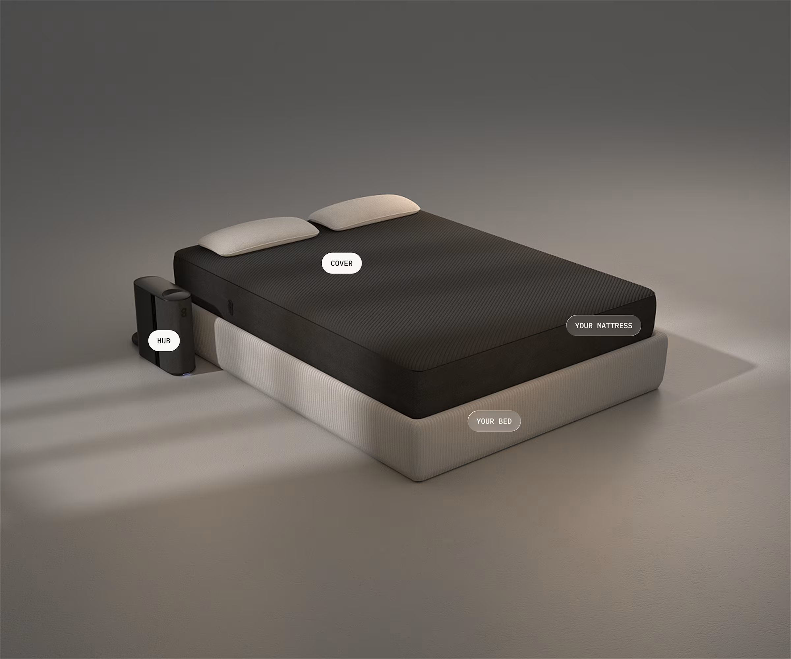
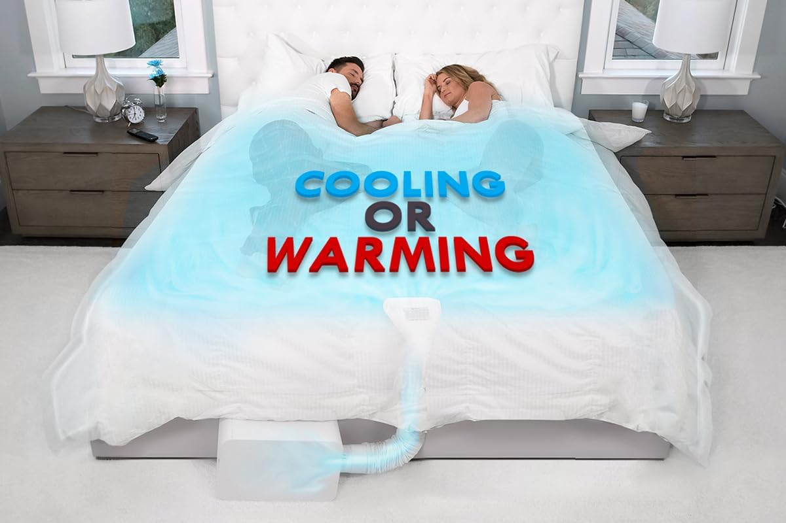
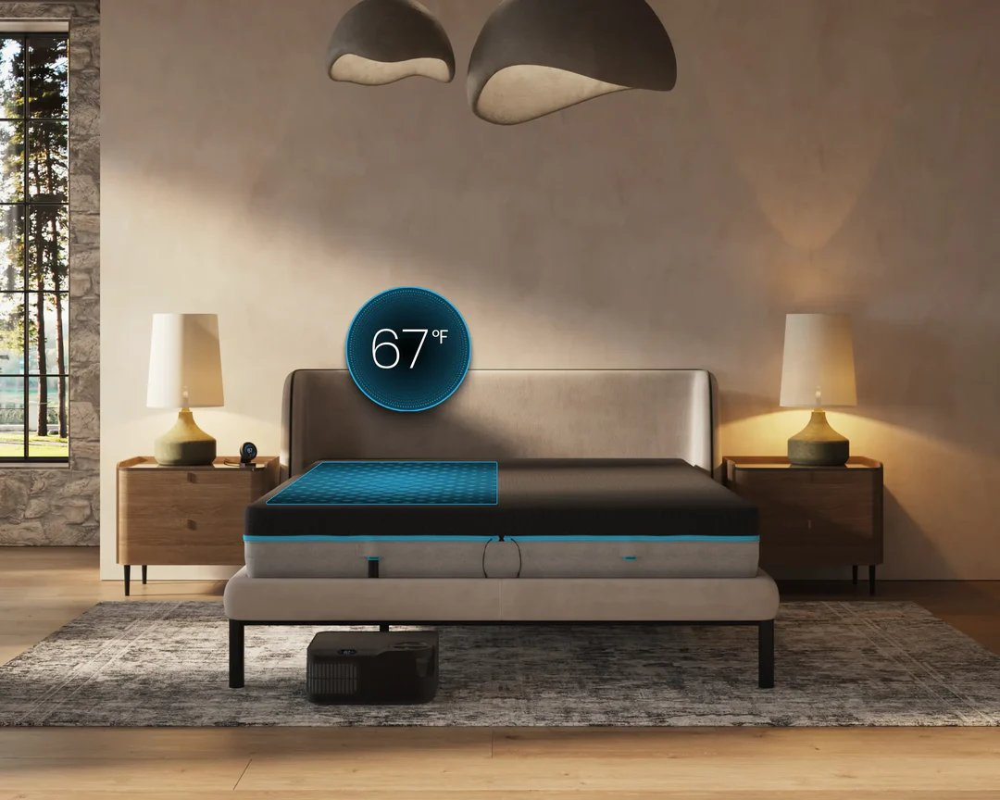
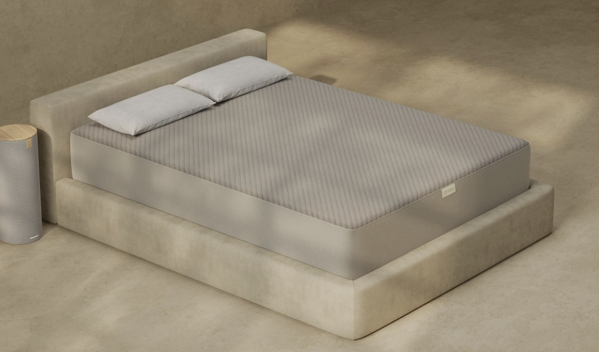
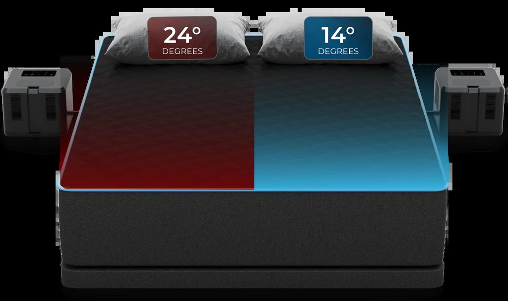
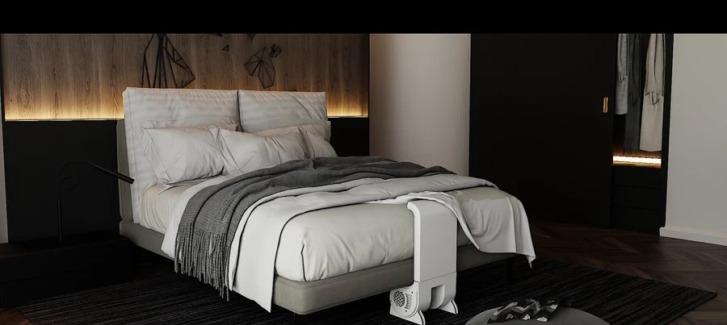

Eight Sleep и реальные альтернативы — независимые исследования сна, точные цены, габариты хабов и где заказать.
Быстрый ответ
Один хаб на двоих с раздельными зонами, лучший сон-трекинг, лучшая поддержка. Охлаждение/нагрев работают без подписки — платишь только за AI-автопилот и трекинг сна ($17+/мес). Самый громкий/крупный хаб в категории.
15.5×10.5×5.75″ — официально самый маленький активный блок в категории. Воздушный (не водяной), быстрая установка (8 минут), без подписки.
Sleepme убрали все подписки в 2025 году. Nightstand-пульт у версии 2.0 — поворот ручки вместо приложения. Для пары нужны 2 отдельных блока.
Минимальная тепловая утечка между зонами (1.2°F при максимальной разнице) против 1.8°F у Pod 4. HSA/FSA-eligible, 365-night trial.
Рынок реально большой и Eight Sleep далеко не единственный игрок. Если важна компактность — BedJet 3 официально самый маленький блок (15.5×10.5×5.75″) среди активных систем, и его можно убрать под кровать. Eight Sleep Pod 5, наоборот, у независимых обзорщиков (T3) назван «the weakest part of the setup» именно из-за хаба — «annoyingly chunky», слишком высокий чтобы засунуть под кровать. Если приоритет — компактность, Eight Sleep не лучший выбор несмотря на бренд-узнаваемость.
| Система | Подписка | Что заблокировано без неё |
|---|---|---|
| Eight Sleep Pod 5 | От $17/мес | AI-автопилот, сон-трекинг, термо-будильник по стадиям. Охлаждение/нагрев вручную — бесплатно |
| ORION | ⚠️ Опционально | Только Orion Intelligence (трекинг сна). Охлаждение/нагрев — бесплатно всегда |
| Chilipad/Sleepme | Нет (убрана в 2025) | Ничего — все функции включая трекинг бесплатны |
| BedJet 3 | Нет | Ничего — приложение и все функции бесплатны |
| Pulsio Thermasleep | Нет | Подписки не существует как опции — система полностью ручная |
| bFan | Нет | Подписки не существует — нет даже приложения |
Цены в карточках ниже часто указывают минимальную конфигурацию (одна зона/один человек). Вот сколько реально стоит покрыть весь матрас с раздельными зонами для двоих — это и есть прямой аналог формата Eight Sleep.
| Система | Цена Queen, Dual Zone, всё включено | Комментарий |
|---|---|---|
| Eight Sleep Pod 5 | $2,849–3,199 | Цена в карточках — это и есть полная цена, без скрытой доплаты за Dual Zone (один хаб обслуживает обе стороны по умолчанию) |
| ORION | $1,895–2,545 | Аналогично Eight Sleep — Dual Zone включён в базовую цену Queen, доплаты нет |
| Chilipad 2.0 / Dock Pro | ~$2,800–3,200 (Queen/King Dual Zone «WE») | Подтверждено: Dual Zone King у Chilipad 2.0 стартует от $3,200 — нужно 2 дока + WE-топпер, не Single Zone «ME» цена |
| BedJet 3 | ~$1,000+ (2 Mini-юнита + обязательный Cloud Sheet) | Дуальный бандл включает Cloud Sheet по умолчанию — без него равномерного распределения воздуха на 2 зоны не получится |
| Pulsio Thermasleep | £799.99 (Both Sides, Super King) | Конфигурация «Both Sides» = 2 пода + 2 контроллера, это и есть полная Dual Zone цена |
| bFan | ~$300–500 (2 устройства) | Цена в карточке — за 1 устройство. Для пары нужно купить два отдельно — общего «Dual Zone бандла» со скидкой не предлагается |
Наука
Не маркетинг — два независимых peer-reviewed исследования с конкретными цифрами.
25 участников, 3 ночи на полисомнографии каждый: контроль (естественный сон), постоянная температура матраса (33°C), и адаптивная регулировка (30°C во время REM, 33°C во время не-REM). Результат адаптивной регулировки против контроля: задержка REM-фазы снизилась с 141.8 до 110.4 минут (p=0.002), доля REM-сна выросла до 20.8% (p=0.006) у мужчин, доля глубокого сна выросла на 12.3% у женщин (p=0.011).
Неделя использования температурно-контролируемого покрытия матраса в реальных условиях (не лаборатория). Более холодная температура в первой половине ночи была связана с увеличением глубокого сна у мужчин и увеличением REM-сна у женщин, плюс снижением частоты пульса во сне и повышением вариабельности сердечного ритма (HRV) — это объективный маркер восстановления организма.
Во время REM-сна организм фактически приостанавливает терморегуляцию — потоотделение и дрожь подавлены (Parmeggiani, основополагающие исследования). Это значит тело не может само скорректировать перегрев в этой фазе — внешний контроль температуры становится единственным способом её скорректировать. Глубокий сон (N3) наиболее чувствителен к перегреву: исследования показывают что тёплая среда сильнее всего сжимает именно эту фазу, где выделяется гормон роста и работает глимфатическая система очистки мозга от токсинов.
Топ систем
Независимые обзоры NapLab, Sleep Doctor, T3, Mattress Nut и официальные данные производителей.






Сравнение
| Система | Тип | Хабов для пары | Размер блока | Подписка | Цена |
|---|---|---|---|---|---|
| Eight Sleep Pod 5 | Вода | 1 | 16×16×6″ крупный | Обязательна | $2,849–6,300 |
| BedJet 3 самый компактный | Воздух | 2 | 15.5×10.5×5.75″ | Нет | $579–699 |
| Chilipad Dock Pro/2.0 | Вода | 2 | Средний | Нет (с 2025) | $1,099–1,799 |
| ORION | Вода | 1 | Компактная площадь, высокий | ⚠️ Частично | $1,895–3,495 |
| Pulsio Thermasleep | Вода | 2 | Компактный | Нет | £449.99–799.99 |
| bFan самый тихий | Воздух | 2 | База 6.25×7×12″ | Нет | $150–250 |
Долговечность
Независимые данные о поломках, утечках и сроке службы — не маркетинг производителя.
| Система | Средний срок службы | Частые поломки | Стоимость замены вне гарантии |
|---|---|---|---|
| Eight Sleep Pod | 4–6 лет (MattressNut) | Отказ хаба на 24–36 мес. (помпа/чиллер), утечки у Pod 2, сенсоры теряют точность через 12+ мес. | Хаб $800–1,000 · Топпер $600–800 |
| Chilipad/Sleepme | 6+ лет (отзыв владельца на Trustpilot) | Реже утечек чем у раннего Eight Sleep, но резервуар теряет больше воды на испарение | Не задокументировано массово |
По BedJet, ORION, Pulsio и bFan сопоставимых долгосрочных данных о надёжности (3+ года использования) в открытых источниках на момент проверки не найдено — рынок этих брендов либо моложе, либо менее представлен в независимых долгосрочных обзорах.
Технические детали
| Система | Уровень шума | Толщина топпера |
|---|---|---|
| Eight Sleep Pod 5 | «Near-silent» на умеренных настройках, слышимый гул на экстремальном охлаждении (-7…-10) | ~3 дюйма (cover) |
| BedJet 3 | 38 dB (50% мощности, по производителю) · 48 dB в независимом сравнении MattressNut при сравнении с тихим ORION | Без топпера — воздух под простыню |
| Chilipad Dock Pro | 41.2 dBA (1 блок) / 44.9 dBA (2 блока) — независимый замер · 32 dB компрессор по другой методике (MattressNut) | Топпер тонкий, ощутимы трубки под телом (жалобы на OOLER-версию) |
| ORION | Описывается как «тихий», есть отдельные жалобы на «звук капель воды» | Сохраняет ощущение исходного матраса, по отзывам |
Точные ватты в публичных спецификациях производителей не раскрываются для большинства систем. По косвенным данным (тип компрессора/помпы, сравнимый с мини-холодильником у Eight Sleep): расход на максимальном охлаждении всю ночь оценивается производителем Eight Sleep как ~$50–75/год при умеренных настройках и до ~$125/год при максимальном охлаждении всю ночь каждую ночь.
Pulsio Thermasleep — единственный бренд с точными цифрами в спецификации: Single Zone — 0.6 кВт за 8 часов использования (~16 пенсов по тарифам UK), Dual Zone — 1.2 кВт за 8 часов (~32 пенса). Это даёт реальную оценку — около £6–12/мес при ежедневном использовании, что заметно дешевле чем неофициальные оценки по другим системам.
Покупка
| Система | Официальный магазин | Крупный ритейлер |
|---|---|---|
| Eight Sleep Pod 5 | eightsleep.com (продаётся только напрямую) | — |
| BedJet 3 | bedjet.com | Amazon |
| Chilipad / Sleepme | sleep.me | Amazon |
| ORION Sleep System | mynucleus.com / официальный сайт ORION | — |
| Pulsio Thermasleep | pulsio.co.uk (UK) | — |
| bFan | bedfan.com / bedfans-usa.com | Amazon |
Вода vs воздух, во сколько обходится владение за 5 лет, и нюансы установки.
Технология
Вода греется/охлаждается в хабе и циркулирует через тонкие трубки внутри топпера. Теплопередача воды значительно выше чем у воздуха — это даёт более резкий и заметный температурный эффект. Минусы: топпер с трубками может ощущаться под телом (особенно жалобы на Chilipad OOLER в независимых тестах), нужна периодическая доливка дистиллированной воды и добавка против биоплёнки.
Блок гонит тёплый или холодный воздух под простыню через шланг. Меньше теплопередача чем у воды, но эффективнее выводит влагу и пот — независимые тестировщики отмечают это как явное преимущество для night sweats. BedJet добавляет нагрев и приложение; bFan — более простой и тихий конкурент (28–32 dB против шумного режима BedJet), но без функции нагрева, только охлаждение. Минус общий для обоих — ощущение «как будто вентилятор дует прямо на кожу», некоторым пользователям некомфортно от прямого воздушного потока.
Используют электрический ток чтобы одна сторона элемента охлаждалась, другая нагревалась — без воды и без воздушного потока. Пока не доминируют на рынке активных систем для матраса, но используются в отдельных охлаждающих подушках и накладках. Гибридные системы добавляют материалы с фазовым переходом (PCM) к термоэлектрике для усиления эффекта.
Если основная жалоба — ночная потливость — воздушная система (BedJet) выводит влагу эффективнее. Если жалоба — просто слишком жарко без пота — водяная система даёт более резкое и предсказуемое охлаждение. Для пары с разными предпочтениями дуальная зона важнее самой технологии — здесь ORION и Eight Sleep с одним хабом на двоих выигрывают у систем требующих два отдельных блока (Chilipad, BedJet для раздельных зон).
Стоимость владения
Подписки и расходники незаметно увеличивают итоговую сумму — вот честный расчёт.
| Система | Старт. цена | Подписка/год | 5 лет итого (примерно) |
|---|---|---|---|
| Eight Sleep Pod 5 Core | $2,849 | $199–300+ | $4,000–6,000 |
| BedJet 3 | $579–699 | $0 | ~$600–750 (+фильтры) |
| Chilipad Dock Pro | $1,099–1,799 | $0 (с 2025) | ~$1,150–1,900 |
| ORION | $1,895–3,495 | Опционально — базовое охлаждение/нагрев бесплатно, Orion Intelligence (трекинг) платно | ~$1,640–3,700 |
| Pulsio Thermasleep | £449.99–799.99 | $0 | ~£470–850 (+электричество ~£6–12/мес) |
| bFan | $150–250 | $0 | ~$150–250 (минимальное энергопотребление) |
Обслуживание
Важный пробел в большинстве обзоров: у водяных систем обслуживание не разовое, а регулярное.
| Система | Расходники | Периодичность | Годовая стоимость |
|---|---|---|---|
| Eight Sleep Pod 5 | Фирменный водяной фильтр | Каждые 6 месяцев | $80/год ($40×2) · бесплатно при подписке |
| BedJet 3 | Lifetime washable air filter — не расходник, а многоразовый | Промывка под краном каждые 3 мес. | $0 — замена бесплатна по гарантии 2 года если понадобится |
| Chilipad Dock Pro | Дистиллированная вода + проприетарный антимикробный раствор (System Cleaner) | Ежемесячная чистка, доливка по необходимости | ~$100/год по независимой оценке (дистиллят + раствор) |
| ORION | Дистиллированная вода (доливка) | Каждые 10 недель, 1.2л — реже всех водяных конкурентов | Минимальная — точная цифра не публикуется |
| Pulsio Thermasleep | Дистиллированная вода | Периодическая доливка/чистка | Минимальная, цифра не публикуется |
| bFan | Нет расходников вообще — только электричество | — | $0 |
Вопрос-ответ